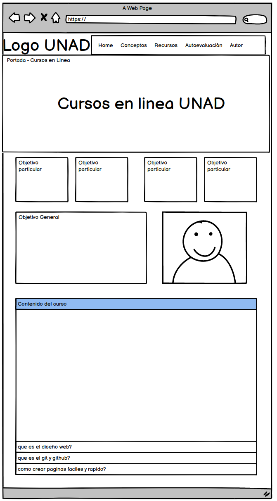
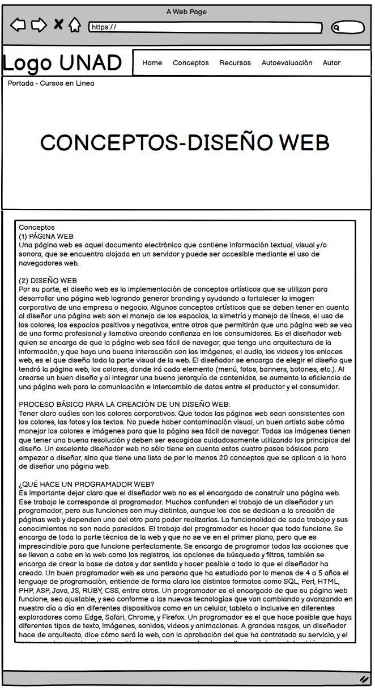
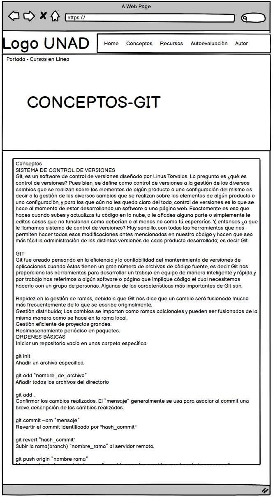
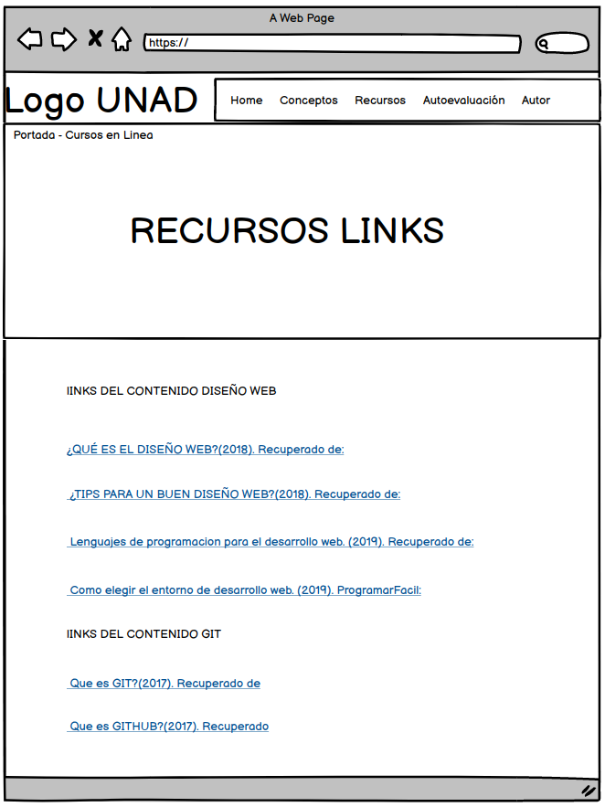
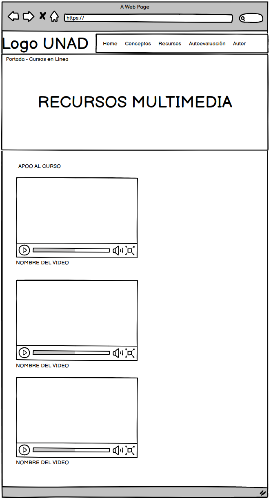
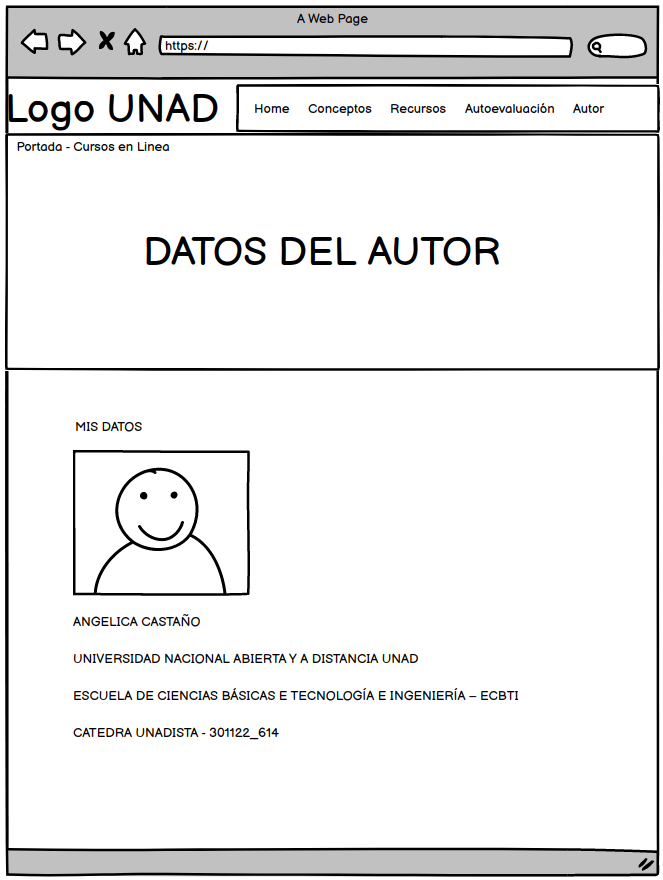

Planeación de sitio :
Objetivo General del sitio:
Describir, profundizar y informar de manera complementaria al usuario sobre el uso de GIT y GITHUB para gestionar proyectos colaborativos de diseño web,HTML5 y CSS3 para creacion de contenido en formato web (Paginas y Sitios Web).
Objetivos específicos del sitio:
Explicar los metodos de creacion de repositorios locales y remotos en GIT y GITHUB.
Explicar la estructura basica de HTML5 (etiquetas,atributos y valores), y la Estructura basica de paginas(HTML,HEAD,BODY).
Demostrar mediante un ejemplo La aplicación de estilos CSS aplicando clases y heredando tags de HTML.
El alumno obtendrá certificación del curso que cuenta con validéz oficial.
Materiales:
https://www.nigbox.com/images/cursos/caratula/curso-css-basico-desde-cero.jpg
https://www.itconsultors.com/images/blog/web-dev-icon.jpg
https://image.freepik.com/vector-gratis/plantilla-certificado-geometrico-abstracto_23-2148420603.jpg
https://www.universidadesvirtuales.com.co/img/article/cuanto-cuesta-estudiar-en-la-unad/cuanto-cuesta-estudiar-en-la-unad.jpeg
https://lh3.googleusercontent.com/proxy/BX6v4LnPYL4N_Qfik_hSOwG3qJLMgumkh5NbvgZhc9akZpqQ-Y4M8YJQ4KpZ3qT8kRTTfV5bYos7G3ek86k9YYI4Zsc7SrtrE9M
https://crm.academiaintegral.com.es//uploads/courses/5158/5c07ec6d5d3d25dd9db5e03_ll.png
https://lh3.googleusercontent.com/proxy/WGBPxCunQt46DqsPd22Atgv69qu8jfucIpGXP1l20Bj3kmkaHZF02VY6qvItE256qqR4Sh4Ay80br0k9KkDxQWC3phnhHiW-KgNkt5k214OAsHYMWLsdVAYCk7CWL8M
https://lh3.googleusercontent.com/proxy/Vf5_wc9f9o448JlVrxAL5Mjj8g1RJ6M5gSLcQfDpdGORsUwG47Wap6B1F3sUnAEQ-H1NutvC98Z8lKhEuxgYtdilstljJdAOsdj79YyXj48jp5MfOUossz8MWLHwaBuF
https://www.mesaticfid.cl/wp-content/uploads/2020/05/clases.jpg
https://sivisae.unad.edu.co/sivisae/template/imagenes/unad/logoUNAD2015Mobile.png
https://openlibra.com/es/book/download/guia-completa-de-css3
hojas de estilos
Borrador del sitio:
Diseño WEB Resumén:
Orientar al usuario acerca de que es una pagina web?,que es el diseño web?, que hace un programador web?, en que entornos se desarollan los sitos web?, que lenguajes o herramientas de programacion se usan? Y algunos tips basicos para elaborar un buen sitio web y poder tener un mejor alcanze y desarrollo en el pagina.
Recursos de consulta
Texto:
¿QUÉ ES EL DISEÑO WEB?(2018). Recuperado de:
https://www.ikkonos.com/ideate/que-es-el-diseno-web
¿TIPS PARA UN BUEN DISEÑO WEB?(2018). Recuperado de:
https://www.ikkonos.com/ideate/tips-para-un-buen-diseno-web
Lenguajes de programacion para el desarrollo web. (2019). Recuperado de:
https://www.piensasolutions.com/blog/principales-lenguajes-programacion-web/
Como elegir el entorno de desarrollo web. (2019). ProgramarFacil:
https://programarfacil.com/podcast/36-como-elegir-el-entorno-de-desarrollo-web/
Texto: Verdana 12 puntos
Imagen: jpeg, png
Video:
Duracion: 0:43 minutos
Ikkonos. (2018) Introduccion a un Diseño Efectivo #1
https://youtu.be/3yYVUv7sALU?list=PLYwIV5im9K5YsqOBXLoglN9QPT86UYmnV
Duracion: 2:12 minutos
Ikkonos. (2018) 4 Tips para mejorar su sitio web
https://www.youtube.com/watch?v=Rn4tyt1gA0E&feature=youtu.be
Duracion: 7:29 minutos
codigofacilito(2018) Lenguajes de programación que debes aprender este 2019
https://www.youtube.com/watch?v=Rn4tyt1gA0E&feature=youtu.be
Duracion: 4:47 minutos
MediunCorporation(2018) Top Tendencias en Desarrollo Web 2019 - ¿Qué aprender?
https://www.youtube.com/watch?v=LhikS66DT6o
Contenido de lectura
Ques El Diseño Web?
El diseño web es la realización de conceptos artísticos utilizados para desarrollar páginas web, como el espacio, la simetría y el procesamiento de líneas, y el uso de colores.
El diseñador web debe asegurarse de que la página web sea fácil de navegar y tenga una buena interacción con las imágenes, el audio y el video en el enlace web. Él es la persona que diseña toda la parte visual de la página web. En resumen, el diseñador es el responsable de elegir el diseño que tendrá el sitio web.
Objetivo
Orientar al usuario acerca de que es?, como se funciona?, como se usa?, un control de versiones, como poder cargar descargar y clonar archivos,videos,proyectos etc almacenados en la nube. Y tambien como llevar un registro de cambios o modificaciones realizadas por ti o por terceros
Que es GIT?(2017). Recuperado de
https://codigofacilito.com/articulos/que-es-git
Que es GITHUB?(2017). Recuperado
https://kinsta.com/es/base-de-conocimiento/que-es-github/
Texto: Verdana 12 puntos
Imagen: jpeg, png
Video:
Duracion: 2:31 minutos
Platzi(2019) ¿Que es Git?
https://www.youtube.com/watch?v=DinilgacaWs
Duracion: 3:45 minutos
GitHub. (2016) What is GitHub?
https://www.youtube.com/watch?v=w3jLJU7DT5E
GIT y GITHUB
Ques GIT?
Git es un software de control de versiones diseñado por Linus Torvalds. La pregunta es ¿qué es el control de versiones? Bueno, la definición de control de versiones es la gestión de varios cambios en productos o elementos de configuración de productos, es decir, la gestión de cambios en productos o elementos de productos. Configuración: para los usuarios que no lo saben, se requiere el control de versiones al desarrollar software o páginas web. Esto es exactamente lo que hace cuando carga y actualiza código en la nube, o le agrega partes, o simplemente edita contenido que no funciona o al menos no funciona.
Ques GITHUB?
GitHub es una empresa sin fines de lucro que brinda servicios de hospedaje para repositorios almacenados en la nube. Esencialmente, facilita que las personas y los equipos utilicen Git como una versión controlada y colaborativa.
Para los desarrolladores novatos que quieren aprovechar Git, la interfaz de GitHub es muy fácil de usar. Sin GitHub, el uso de Git generalmente requiere más conocimiento técnico y uso de la línea de comandos.
GitHub es tan fácil de usar que algunas personas incluso usan GitHub para administrar otros tipos de proyectos, como escribir libros.
Además, cualquiera puede registrarse y alojar un repositorio de código público completamente gratuito, lo que hace que GitHub sea especialmente popular entre los proyectos de código abierto.





